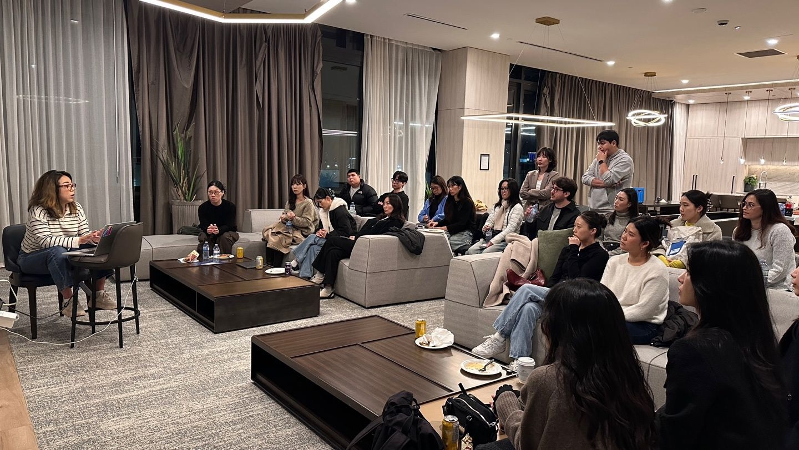
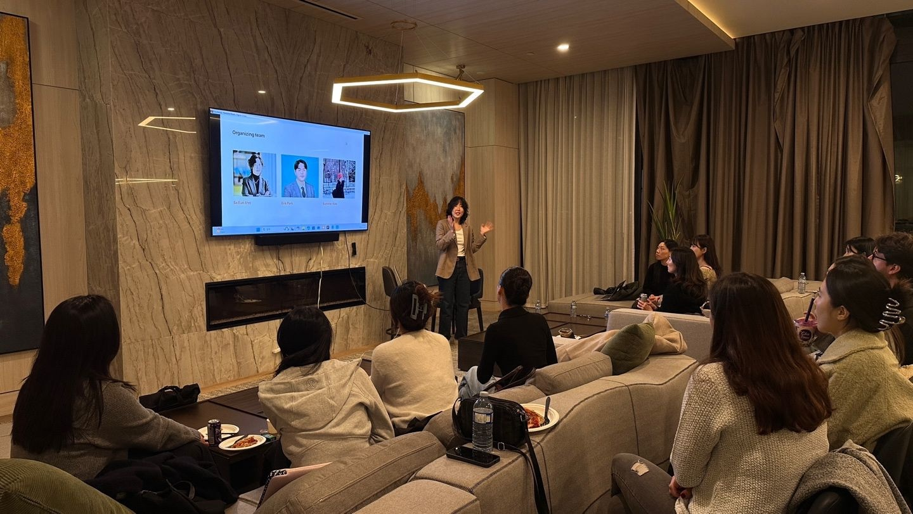
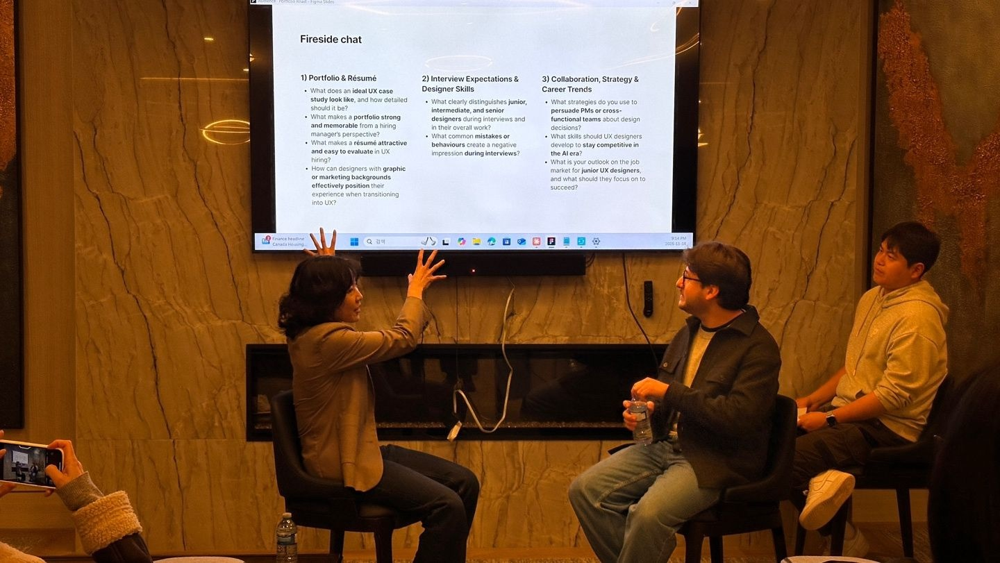

UXPortfolio Roast · Live mock interview · Burnaby · Nov 2025
Portfolio Roast: A Live Mock Interview & Fireside Talk for UX Designers
I helped organize a live portfolio mock interview and fireside talk for more than 20 designers in Burnaby. Two designers presented their case studies with Carlos Melendez, Principal User Experience Designer at Oracle, while the room learned from the questions, feedback, and honest career conversation that followed.

A portfolio reads differently when you have to present it
Portfolio work is usually done alone. Designers can spend weeks editing a case study, but they often do not learn how the story lands until a real interview begins.
We wanted to make that moment less private and less intimidating. Portfolio Roast put real case studies into a live interview setting, then opened the questions and feedback to the room so everyone could learn from the same conversation.
So Eun Ahn brought together the guest, presenters, and community. I worked with So Eun and Suryeon Kim on the organizing team, supporting the program flow and the experience in the room. The official event page listed 25 attendees, and the event recap confirmed that more than 20 designers joined us that evening.
| Format | Live mock interviews, expert feedback, fireside talk, audience Q&A, and networking |
| Guest | Carlos Melendez, Principal User Experience Designer at Oracle |
| Presenters | Hayley Lee and Sue Lee |
| Organizing team | So Eun Ahn, Erik Park, and Suryeon Kim |
| Partner | KDNEW |

We put the portfolio into an interview, not a slideshow
Hayley Lee and Sue Lee each presented a portfolio case study in front of the room. Carlos responded as an experienced interviewer would: he listened to the story, asked for missing context, and gave direct feedback on what made the work easier or harder to evaluate.
The live format changed the value of the critique. A question asked of one presenter was useful to everyone. People could see where a polished screen still needed a clearer decision, where the outcome needed stronger evidence, and where the story became easier to follow once the presenter explained the context aloud.

The fireside talk followed the questions designers actually carry
After the presentations, the conversation moved from the individual case studies to the wider questions designers were already bringing into interviews and day-to-day work.
| Theme | Questions we discussed |
|---|---|
| Portfolio and résumé | The right level of case-study detail, what makes work memorable, visual clarity, and how to position experience from graphic design or marketing |
| Interview expectations | What separates junior, intermediate, and senior designers, and which interview behaviours create a negative impression |
| Collaboration and career | How to explain design decisions to cross-functional partners, which skills matter in the AI era, and what junior designers should focus on in a difficult job market |
The timing mattered. These were not abstract career questions asked at the beginning of the night. Everyone had just watched two real stories being presented and questioned, so the advice had something concrete to attach to.
One person's feedback became shared learning
Portfolio feedback is often a private exchange between a reviewer and one designer. Here, more than 20 people could watch the same story, hear the same question, and compare it with their own work.
That made the room feel less like a panel and more like a working session. The presenters were generous enough to show unfinished parts of their stories. The audience listened closely, asked follow-up questions, and stayed for the conversations that continued after the formal program.
Sue Lee
“On November 18th, I gave my first solo presentation about ‘Lento’.”
In her recap, Sue thanked Carlos for the encouragement he gave her just before the presentation and the audience for listening with warmth. For me, that was the clearest outcome of the event: it gave someone a place to practise something difficult before the next real interview.
What stayed with me as an organizer
A useful portfolio review cannot stop at making the page look more polished. It has to test whether the designer can explain the problem, the decisions, and the evidence when another person starts asking questions.
A portfolio is not only a finished page. It is a story that has to hold together when the questions begin.
The evening did not give everyone one perfect portfolio template. It made the evaluation process more visible. Designers left with clearer standards, better questions, and a more realistic sense of what they needed to practise next.
That is what I want a community event to do. Create enough structure for honest feedback, and enough trust for people to share work before it feels completely ready.